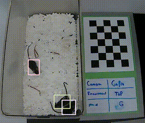
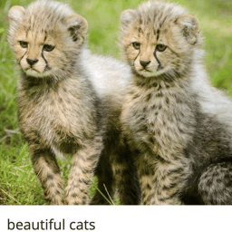

My name is Gaurav and im currently in grad school at the University of Michigan, studying computer science (B.S, M.S). At UMich work on AI research, where I have the pleasure of being advised by Ada Eban-Rothschild and Justin Johnson where I work on problems in computer vision. You can click on the bubbles below to filter all my projects by catagory, Thanks for stopping by!
DAMM (DETECT ANY MOUSE MODEL): A FOUNDATION MODEL FOR MOUSE DETECTION

SAM DATA ANNOTATOR: SEGMENT ANYTHING MODEL GUI FOR ANNOTATING DETECTION DATASTES

REDCAPS: VISION LANGUAGE DATASET WITH 12M+ IMAGE-TEXT PAIRS
